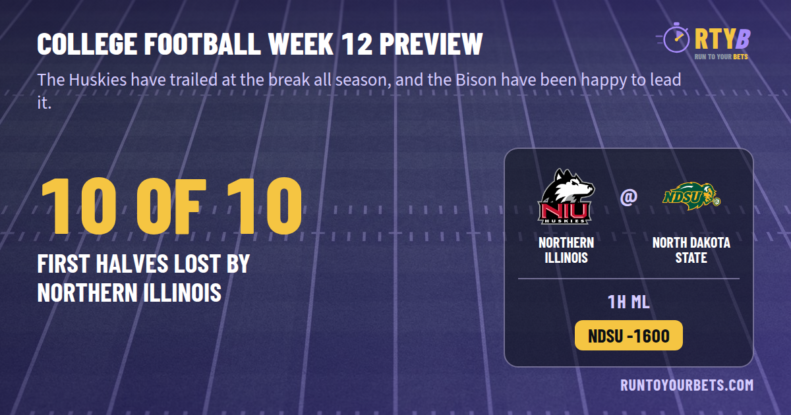

College Football Week 12 First Quarter & First Half Betting Preview
Northern Illinois Has Lost Every First Half. North Dakota State Awaits.
The Huskies have trailed at the break all season, and the Bison have been happy to lead it.
By RTYB · Published 10:01 AM ET · 61 games

Start with Northern Illinois at North Dakota State. Northern Illinois has lost the first half in all 10 games. North Dakota State has won it 70% (7-3).
There are 65 games on the Week 12 slate. Two kick off Friday night, and Saturday runs from noon to 10:15 PM ET with plenty of early-segment angles.
Stat of the Night
90%
UTEP lost the 1H · 9-1
UTEP has lost the first half 90% (9-1), so a fast start has been the rare exception for them all season.
The Matchups
Friday


 Oregon at Michigan State · Friday 8:00 PM ET
Oregon at Michigan State · Friday 8:00 PM ET
Spartan Stadium, East Lansing, MI · TV: Fox
Home underdogs have covered the first-half spread 58% (53-38). Michigan State has covered the first-half spread 3 straight. Michigan State with the first-half points is where the numbers lean.

 New Mexico at Wyoming · Friday 9:00 PM ET
New Mexico at Wyoming · Friday 9:00 PM ET
War Memorial Stadium, Laramie, WY · TV: FS1
New Mexico has won the first half 80% (8-2). Wyoming has won the first quarter 5 straight. The first half leans New Mexico, while the first quarter is a closer call.
Saturday


 Vanderbilt at Florida · Saturday 12:00 PM ET
Vanderbilt at Florida · Saturday 12:00 PM ET
Ben Hill Griffin Stadium, Gainesville, FL · TV: SEC Network
Florida has lost the first half 6 straight. Florida and Vanderbilt first halves have both gone Under 3 straight. The first-half Under is where the numbers stack.


 BYU at Kansas · Saturday 12:00 PM ET
BYU at Kansas · Saturday 12:00 PM ET
David Booth Kansas Memorial Stadium, Lawrence, KS · TV: ABC
BYU has won the first quarter and the first half 70% (7-3) each. Kansas has covered the first-quarter spread 4 straight. The first half leans BYU, while the first quarter is a tug of war.


 Wake Forest at Georgia Tech · Saturday 12:00 PM ET
Wake Forest at Georgia Tech · Saturday 12:00 PM ET
Bobby Dodd Stadium, Atlanta, GA · TV: ESPN
Wake Forest has won the first half 80% (8-2). Georgia Tech first quarters have gone Under 4 straight. Wake Forest in the first half is where the numbers point.


 North Texas at Tulane · Saturday 12:00 PM ET
North Texas at Tulane · Saturday 12:00 PM ET
Yulman Stadium, New Orleans, LA · TV: ESPNU
Tulane has lost the first half 70% (7-3). Tulane has failed to cover the first-half spread 4 straight. North Texas in the first half is where the numbers lean.


 Houston at West Virginia · Saturday 1:00 PM ET
Houston at West Virginia · Saturday 1:00 PM ET
Milan Puskar Stadium, Morgantown, WV · TV: TNT
Houston has won both the first quarter and the first half 80% (8-2). Houston has covered the first-quarter spread 3 straight. Houston out of the gate is where the numbers stack.


 Iowa at Illinois · Saturday 2:30 PM ET
Iowa at Illinois · Saturday 2:30 PM ET
Gies Memorial Stadium, Champaign, IL · TV: BTN
Illinois first quarters and first halves have both gone Under 4 straight. Iowa has covered the first-half spread 3 straight. An Iowa edge in a low-scoring first half is where the numbers point.


 Rutgers at Penn State · Saturday 3:30 PM ET · Matchup of the Day
Rutgers at Penn State · Saturday 3:30 PM ET · Matchup of the Day
Beaver Stadium, University Park, PA · TV: FS1
Penn State has won the first half 80% (8-2). Rutgers has lost the first half 6 straight. Penn State in the first half is where the numbers stack.

 Northern Illinois at North Dakota State · Saturday 4:00 PM ET
Northern Illinois at North Dakota State · Saturday 4:00 PM ET
Fargodome, Fargo, ND · TV: CW
Northern Illinois has lost the first quarter 70% (7-3). North Dakota State has failed to cover the first-half spread 3 straight. The numbers favor North Dakota State winning the early segments more than covering the big first-half spread.


 Georgia Southern at Troy · Saturday 4:00 PM ET
Georgia Southern at Troy · Saturday 4:00 PM ET
Veterans Memorial Stadium (AL), Troy, AL · TV: ESPN+
Georgia Southern has won the first half 80% (8-2). Troy has failed to cover the first-half spread 4 straight. Georgia Southern in the first half is where the numbers stack.


 UNLV at San José State · Saturday 7:00 PM ET
UNLV at San José State · Saturday 7:00 PM ET
CEFCU Stadium, San Jose, CA · TV: CBSSN
UNLV has lost the first quarter 4 straight. San José State first quarters have gone Under 4 straight. San José State in a quiet first quarter is where the numbers lean.


 Georgia at South Carolina · Saturday 7:30 PM ET
Georgia at South Carolina · Saturday 7:30 PM ET
Williams-Brice Stadium, Columbia, SC · TV: ABC
Georgia has won the first half 80% (8-2). Georgia has won the first quarter 5 straight. Georgia early is where the numbers stack.


 Colorado State at Fresno State · Saturday 7:30 PM ET
Colorado State at Fresno State · Saturday 7:30 PM ET
Valley Children's Stadium, Fresno, CA · TV: CW
Colorado State has lost the first quarter and the first half 70% (7-3) each. Colorado State has failed to cover the first-quarter spread 3 straight. Fading Colorado State early is where the numbers point.


 Oklahoma State at Arizona State · Saturday 10:15 PM ET
Oklahoma State at Arizona State · Saturday 10:15 PM ET
Mountain America Stadium, Tempe, AZ · TV: ESPN
Oklahoma State has lost the first quarter 70% (7-3). Fading small favorites on the first-quarter spread is 60% (44-29). Arizona State on the first-quarter spread is where the numbers stack.
14 more College Football league trends fit this week’s games. All College Football trends →
Past previews: All →
21+ only. Gambling problem? Call 1-800-GAMBLER.